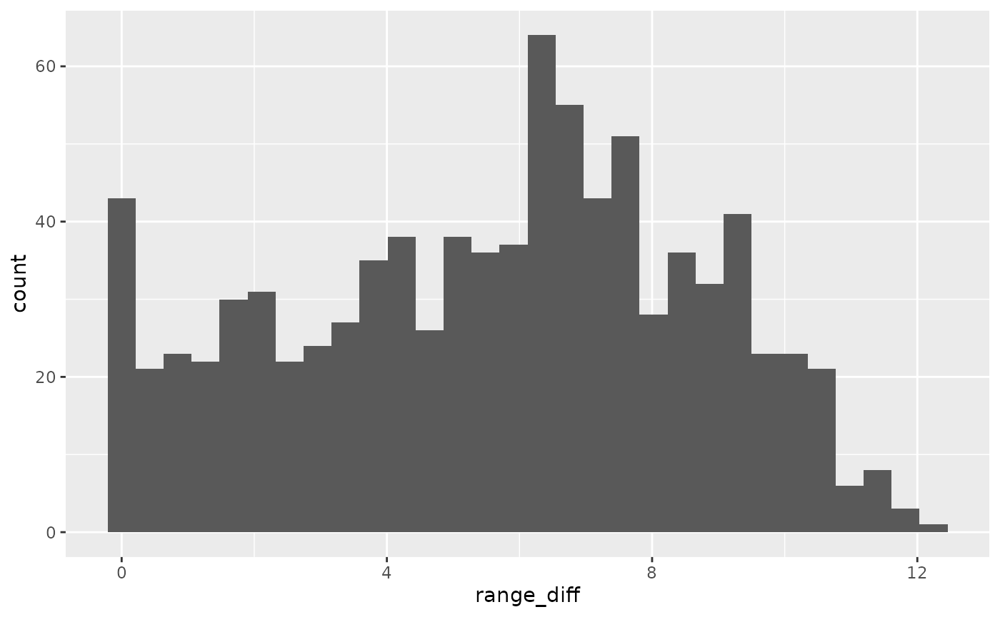
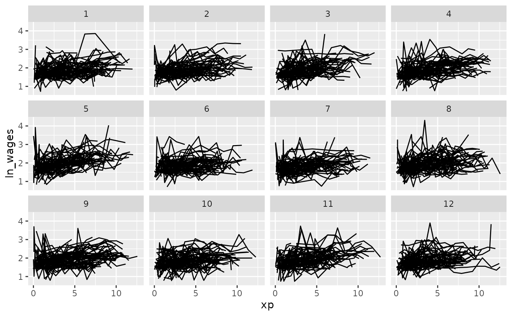
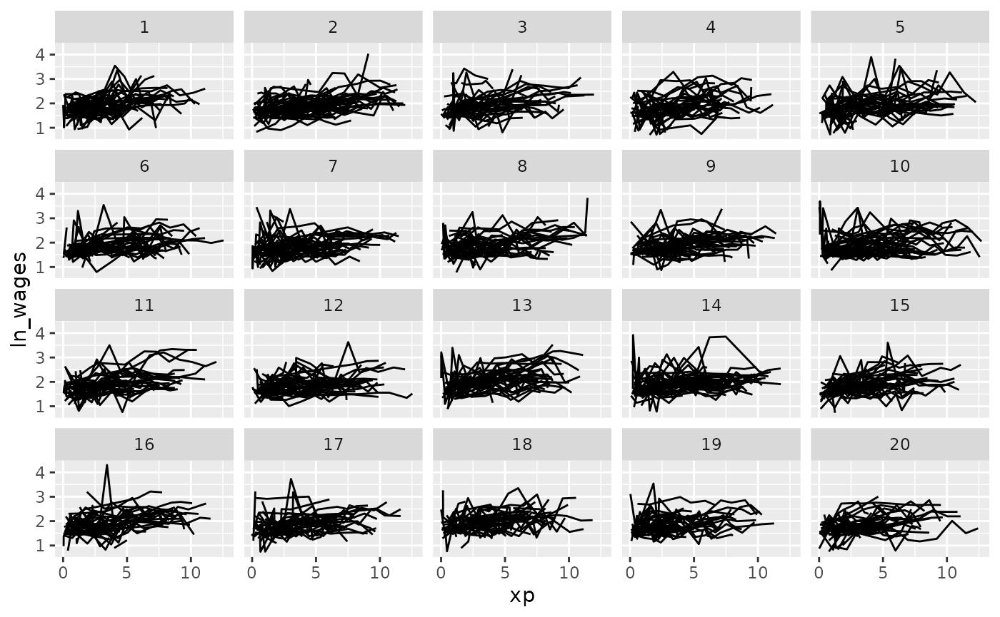
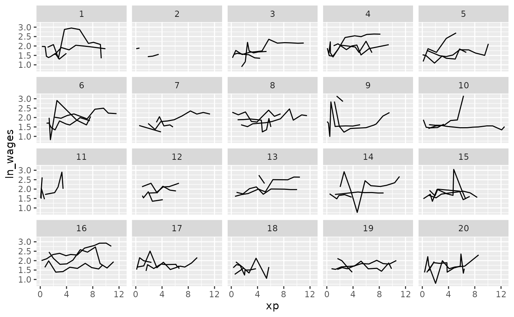
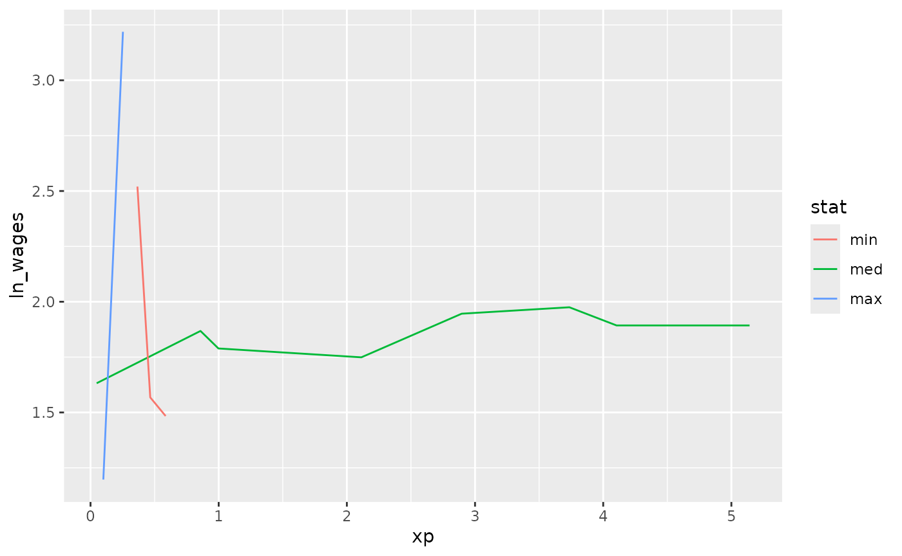

When we first get a longitudinal dataset, you need to understand some of its structure. This vignette demonstrates part of the process of understanding your new longitudinal data.
Setting up your data
To use brolgar with your work, you should convert your
longitudinal data into a time series tsibble using the
tsibble package. To do so, you need to identify the unique
identifying key, and time index. For
example:
wages <- as_tsibble(wages,
key = id,
index = xp,
regular = FALSE)To learn more about longitudinal data as time series, see the vignette: Longitudinal Data Structures.
Basic summaries of the data
When you first get a dataset, you need to get an overall sense of what is in the data.
How many observations are there?
We can kind the number of keys using n_keys():
n_keys(wages)
#> [1] 888Note that this is a single number, in this case, we have 888 observations.
However, we might want to know how many observations we have for each
individual. If we want the number of observations in each variable, then
we can use n_obs() with features().
wages %>%
features(ln_wages, n_obs)
#> # A tibble: 888 × 2
#> id n_obs
#> <int> <int>
#> 1 31 8
#> 2 36 10
#> 3 53 8
#> 4 122 10
#> 5 134 12
#> 6 145 9
#> 7 155 11
#> 8 173 6
#> 9 206 3
#> 10 207 11
#> # ℹ 878 more rowsA plot of this can help provide better understanding of the distribution of observations.
add_n_obs()
You can add information about the number of observations for each key
with add_n_obs():
wages %>% add_n_obs()
#> # A tsibble: 6,402 x 10 [!]
#> # Key: id [888]
#> id xp n_obs ln_wages ged xp_since_ged black hispanic high_grade
#> <int> <dbl> <int> <dbl> <int> <dbl> <int> <int> <int>
#> 1 31 0.015 8 1.49 1 0.015 0 1 8
#> 2 31 0.715 8 1.43 1 0.715 0 1 8
#> 3 31 1.73 8 1.47 1 1.73 0 1 8
#> 4 31 2.77 8 1.75 1 2.77 0 1 8
#> 5 31 3.93 8 1.93 1 3.93 0 1 8
#> 6 31 4.95 8 1.71 1 4.95 0 1 8
#> 7 31 5.96 8 2.09 1 5.96 0 1 8
#> 8 31 6.98 8 2.13 1 6.98 0 1 8
#> 9 36 0.315 10 1.98 1 0.315 0 0 9
#> 10 36 0.983 10 1.80 1 0.983 0 0 9
#> # ℹ 6,392 more rows
#> # ℹ 1 more variable: unemploy_rate <dbl>Which you can then use to filter() observations:
library(dplyr)
wages %>%
add_n_obs() %>%
filter(n_obs > 3)
#> # A tsibble: 6,145 x 10 [!]
#> # Key: id [764]
#> id xp n_obs ln_wages ged xp_since_ged black hispanic high_grade
#> <int> <dbl> <int> <dbl> <int> <dbl> <int> <int> <int>
#> 1 31 0.015 8 1.49 1 0.015 0 1 8
#> 2 31 0.715 8 1.43 1 0.715 0 1 8
#> 3 31 1.73 8 1.47 1 1.73 0 1 8
#> 4 31 2.77 8 1.75 1 2.77 0 1 8
#> 5 31 3.93 8 1.93 1 3.93 0 1 8
#> 6 31 4.95 8 1.71 1 4.95 0 1 8
#> 7 31 5.96 8 2.09 1 5.96 0 1 8
#> 8 31 6.98 8 2.13 1 6.98 0 1 8
#> 9 36 0.315 10 1.98 1 0.315 0 0 9
#> 10 36 0.983 10 1.80 1 0.983 0 0 9
#> # ℹ 6,135 more rows
#> # ℹ 1 more variable: unemploy_rate <dbl>We can also look at the distance between experience, to understand what the distribution of experience is
wages_xp_range <- wages %>%
features(xp,
feat_ranges)
ggplot(wages_xp_range,
aes(x = range_diff)) +
geom_histogram()
We can then explore the range of experience to see what the most common experience is
wages_xp_range %>%
count(range_diff) %>%
mutate(prop = n / sum(n))
#> # A tibble: 829 × 3
#> range_diff n prop
#> <dbl> <int> <dbl>
#> 1 0 38 0.0428
#> 2 0.0150 1 0.00113
#> 3 0.068 1 0.00113
#> 4 0.137 1 0.00113
#> 5 0.153 1 0.00113
#> 6 0.185 1 0.00113
#> 7 0.22 1 0.00113
#> 8 0.225 1 0.00113
#> 9 0.231 1 0.00113
#> 10 0.26 1 0.00113
#> # ℹ 819 more rowsEfficiently exploring longitudinal data
To avoid staring at a plate of spaghetti, you can look at a random subset of the data. Brolgar provides some intuitive functions to help with this.
sample_n_keys()
In dplyr, you can use sample_n() to sample
n observations. Similarly, with brolgar, you
can take a random sample of n keys using
sample_n_keys():
Filtering observations
You can combine sample_n_keys() with
add_n_obs() and filter() to only show keys
with many observations:
library(dplyr)
wages %>%
add_n_obs() %>%
filter(n_obs > 5) %>%
sample_n_keys(size = 10) %>%
ggplot(aes(x = xp,
y = ln_wages,
group = id)) +
geom_line()(Note: sample_frac_keys(), which samples a fraction of
available keys.)
Now, how do you break these into many plots?
Clever facets: facet_strata
brolgar provides some clever facets to help make it
easier to explore your data. facet_strata() splits the data
into 12 groups by default:
set.seed(2019-07-23-1936)
library(ggplot2)
ggplot(wages,
aes(x = xp,
y = ln_wages,
group = id)) +
geom_line() +
facet_strata()
But you could ask it to split the data into a more groups
set.seed(2019-07-25-1450)
library(ggplot2)
ggplot(wages,
aes(x = xp,
y = ln_wages,
group = id)) +
geom_line() +
facet_strata(n_strata = 20)
And what if you want to show only a few samples per facet?
Clever facets: facet_sample
facet_sample() allows you to specify the number of keys
per facet, and the number of facets with n_per_facet and
n_facets. It splits the data into 12 facets with 3 per
facet by default:
set.seed(2019-07-23-1937)
ggplot(wages,
aes(x = xp,
y = ln_wages,
group = id)) +
geom_line() +
facet_sample()
But you can specify your own number:
set.seed(2019-07-25-1533)
ggplot(wages,
aes(x = xp,
y = ln_wages,
group = id)) +
geom_line() +
facet_sample(n_per_facet = 3,
n_facets = 20)
Under the hood, facet_sample() and
facet_strata() use sample_n_keys() and
stratify_keys().
Exploratory modelling
You can fit a linear model for each key using
key_slope(). This returns the intercept and slope estimate
for each key, given some linear model formula. We can get the number of
observations, and slope information for each individual to identify
those that are decreasing over time.
key_slope(wages,ln_wages ~ xp)
#> # A tibble: 888 × 3
#> id .intercept .slope_xp
#> <int> <dbl> <dbl>
#> 1 31 1.41 0.101
#> 2 36 2.04 0.0588
#> 3 53 2.29 -0.358
#> 4 122 1.93 0.0374
#> 5 134 2.03 0.0831
#> 6 145 1.59 0.0469
#> 7 155 1.66 0.0867
#> 8 173 1.61 0.100
#> 9 206 1.73 0.180
#> 10 207 1.62 0.0884
#> # ℹ 878 more rowsWe can then join these summaries back to the data:
library(dplyr)
wages_slope <- key_slope(wages,ln_wages ~ xp) %>%
left_join(wages, by = "id")
wages_slope
#> # A tibble: 6,402 × 11
#> id .intercept .slope_xp ln_wages xp ged xp_since_ged black hispanic
#> <int> <dbl> <dbl> <dbl> <dbl> <int> <dbl> <int> <int>
#> 1 31 1.41 0.101 1.49 0.015 1 0.015 0 1
#> 2 31 1.41 0.101 1.43 0.715 1 0.715 0 1
#> 3 31 1.41 0.101 1.47 1.73 1 1.73 0 1
#> 4 31 1.41 0.101 1.75 2.77 1 2.77 0 1
#> 5 31 1.41 0.101 1.93 3.93 1 3.93 0 1
#> 6 31 1.41 0.101 1.71 4.95 1 4.95 0 1
#> 7 31 1.41 0.101 2.09 5.96 1 5.96 0 1
#> 8 31 1.41 0.101 2.13 6.98 1 6.98 0 1
#> 9 36 2.04 0.0588 1.98 0.315 1 0.315 0 0
#> 10 36 2.04 0.0588 1.80 0.983 1 0.983 0 0
#> # ℹ 6,392 more rows
#> # ℹ 2 more variables: high_grade <int>, unemploy_rate <dbl>And highlight those individuals with a negative slope using
gghighlight:
library(gghighlight)
wages_slope %>%
as_tibble() %>% # workaround for gghighlight + tsibble
ggplot(aes(x = xp,
y = ln_wages,
group = id)) +
geom_line() +
gghighlight(.slope_xp < 0)
Find keys near other summaries with keys_near
We could take our slope information and find those individuals who
are representative of the min, median, maximum, etc of growth, using
keys_near():
wages_slope %>%
keys_near(key = id,
var = .slope_xp,
funs = l_three_num)
#> # A tibble: 13 × 5
#> id .slope_xp stat stat_value stat_diff
#> <int> <dbl> <fct> <dbl> <dbl>
#> 1 6863 0.0452 med 0.0452 0
#> 2 6863 0.0452 med 0.0452 0
#> 3 6863 0.0452 med 0.0452 0
#> 4 6863 0.0452 med 0.0452 0
#> 5 6863 0.0452 med 0.0452 0
#> 6 6863 0.0452 med 0.0452 0
#> 7 6863 0.0452 med 0.0452 0
#> 8 6863 0.0452 med 0.0452 0
#> 9 7918 -4.58 min -4.58 0
#> 10 7918 -4.58 min -4.58 0
#> 11 7918 -4.58 min -4.58 0
#> 12 12455 13.2 max 13.2 0
#> 13 12455 13.2 max 13.2 0
wages_slope %>%
keys_near(key = id,
var = .slope_xp,
funs = l_three_num) %>%
left_join(wages, by = "id") %>%
ggplot(aes(x = xp,
y = ln_wages,
group = id,
colour = stat)) +
geom_line()
Finding features in longitudinal data
You can extract features of longitudinal data using the
features function, from fabletools. You can,
for example, calculate the minimum of a given variable for each key by
providing a named list like so:
wages %>%
features(ln_wages,
list(min = min))
#> # A tibble: 888 × 2
#> id min
#> <int> <dbl>
#> 1 31 1.43
#> 2 36 1.80
#> 3 53 1.54
#> 4 122 0.763
#> 5 134 2.00
#> 6 145 1.48
#> 7 155 1.54
#> 8 173 1.56
#> 9 206 2.03
#> 10 207 1.58
#> # ℹ 878 more rowsbrolgar provides some sets of features, which start with
feat_.
For example, the five number summary is
feat_five_num:
wages %>%
features(ln_wages, feat_five_num)
#> # A tibble: 888 × 6
#> id min q25 med q75 max
#> <int> <dbl> <dbl> <dbl> <dbl> <dbl>
#> 1 31 1.43 1.48 1.73 2.02 2.13
#> 2 36 1.80 1.97 2.32 2.59 2.93
#> 3 53 1.54 1.58 1.71 1.89 3.24
#> 4 122 0.763 2.10 2.19 2.46 2.92
#> 5 134 2.00 2.28 2.36 2.79 2.93
#> 6 145 1.48 1.58 1.77 1.89 2.04
#> 7 155 1.54 1.83 2.22 2.44 2.64
#> 8 173 1.56 1.68 2.00 2.05 2.34
#> 9 206 2.03 2.07 2.30 2.45 2.48
#> 10 207 1.58 1.87 2.15 2.26 2.66
#> # ℹ 878 more rowsOr finding those whose values only increase or decrease with
feat_monotonic
wages %>%
features(ln_wages, feat_monotonic)
#> # A tibble: 888 × 5
#> id increase decrease unvary monotonic
#> <int> <lgl> <lgl> <lgl> <lgl>
#> 1 31 FALSE FALSE FALSE FALSE
#> 2 36 FALSE FALSE FALSE FALSE
#> 3 53 FALSE FALSE FALSE FALSE
#> 4 122 FALSE FALSE FALSE FALSE
#> 5 134 FALSE FALSE FALSE FALSE
#> 6 145 FALSE FALSE FALSE FALSE
#> 7 155 FALSE FALSE FALSE FALSE
#> 8 173 FALSE FALSE FALSE FALSE
#> 9 206 TRUE FALSE FALSE TRUE
#> 10 207 FALSE FALSE FALSE FALSE
#> # ℹ 878 more rows